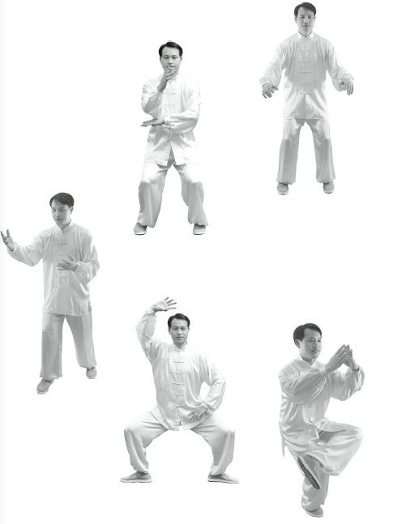
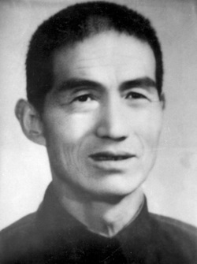
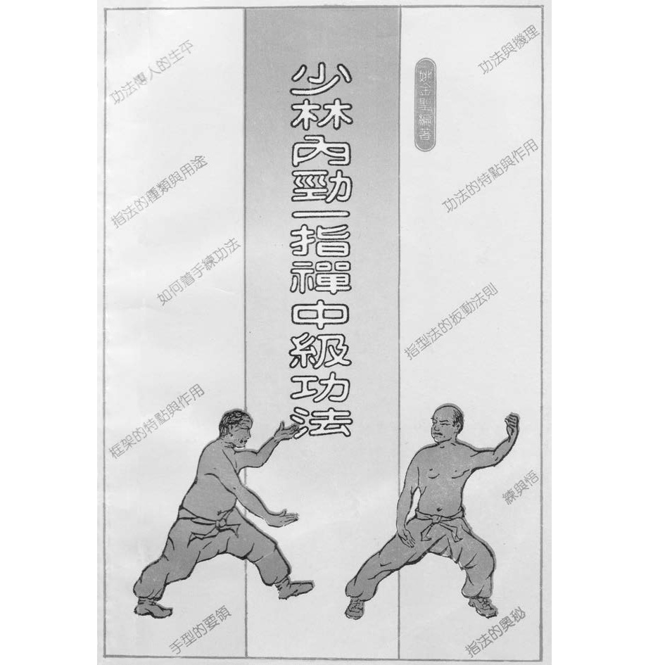
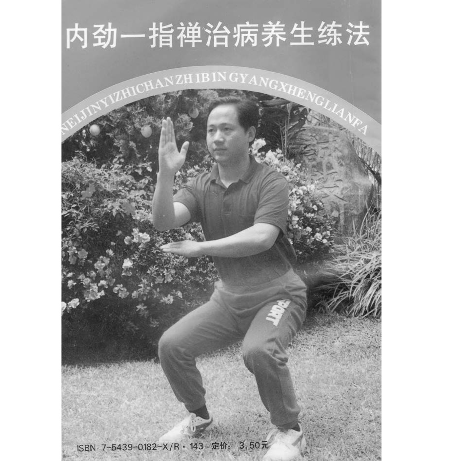
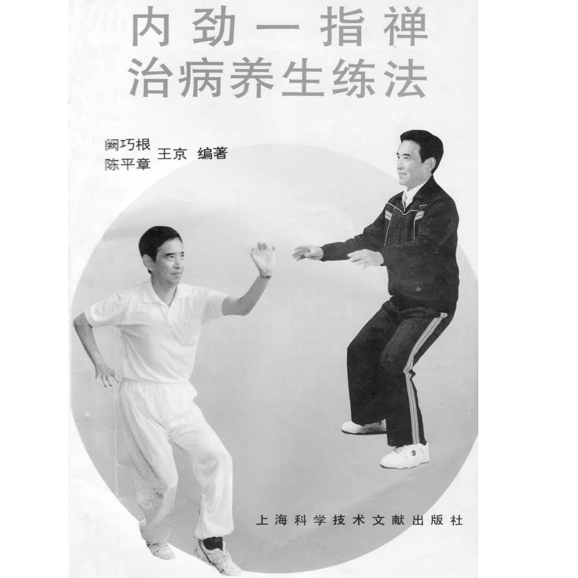
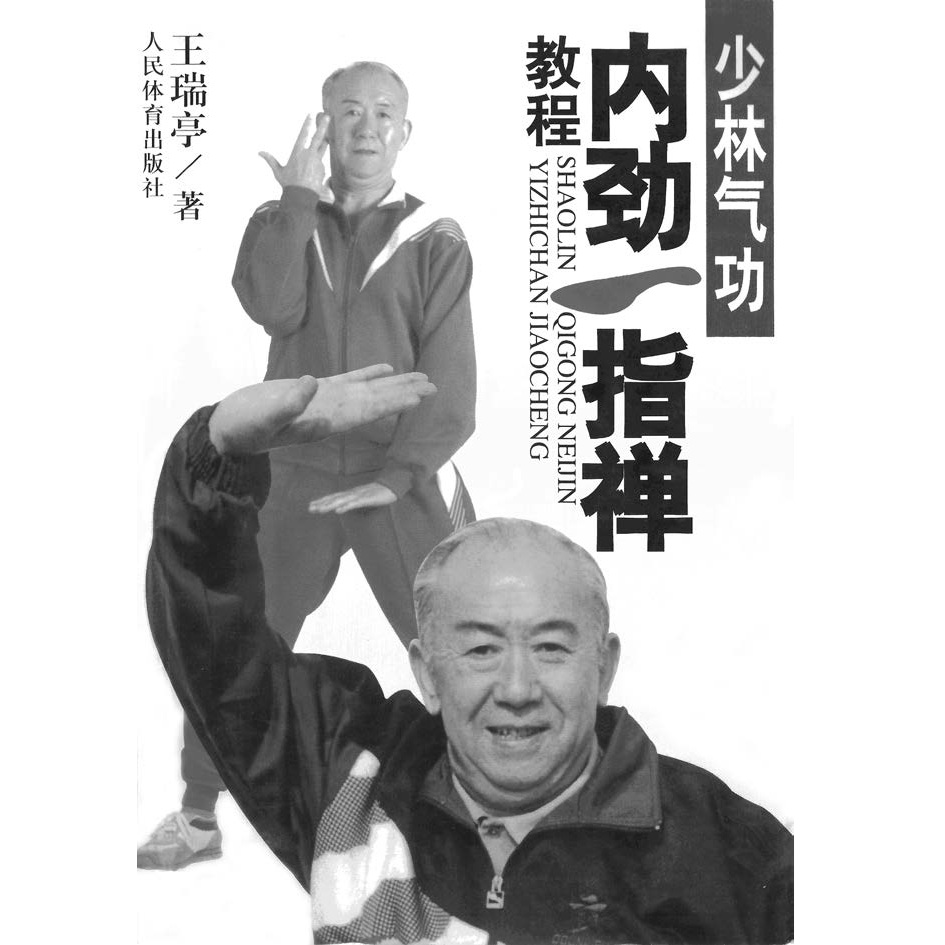
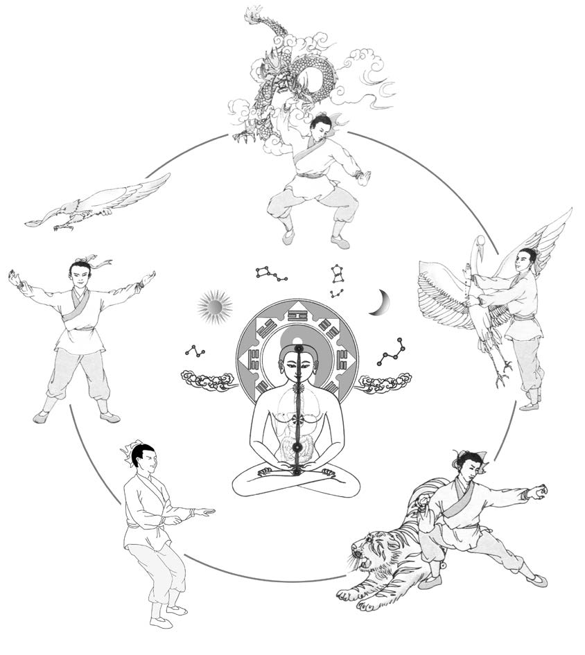
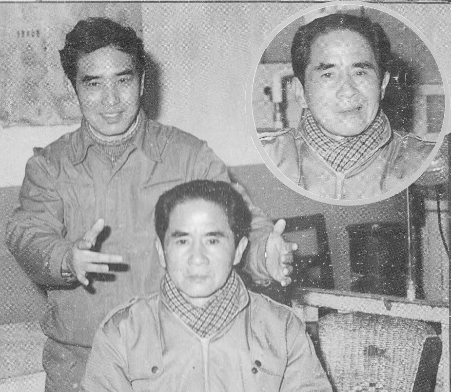
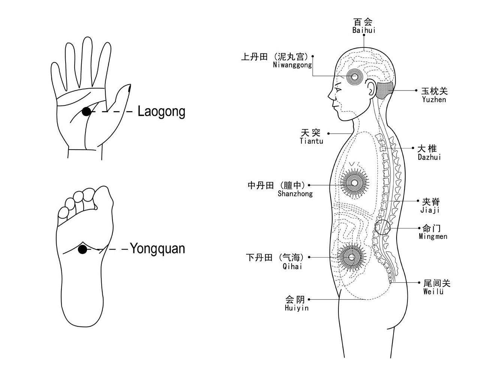

少林内劲一指禅
本页系统介绍少林内劲一指禅的历史、修炼体系、主要特性、健康理念与练功方法。
本页目录
1 少林内劲一指禅简介
起源
少林内劲一指禅源自北方少林寺的禅修实践，其历史可追溯至公元500年左右。 后来，这一功法在南方少林寺得到了保存与进一步发展。1945年离开寺院的太师祖阙阿水， 首次将这一功法向更广泛的公众进行了推广。在他之后，作为第十九代传人， 姚金圣大师为该功法的进一步传播做出了巨大贡献。最终，他将向西方世界传播 少林内劲气功这一重任，托付给了其嫡系传人中唯一的授权代表——郑博音大师。
作为禅宗佛教中至关重要的禅修组成部分，少林内劲气功属于那些历经传统、 纯正传承下来的正统气功体系。它具备所有可考证的特征，包括清晰的师承谱系、 循序渐进的功法层级与能力进阶，以及身心兼修的训练理念。
该功法的诸多潜能，在其名称中得到了清晰的体现：

- 少林 —— 指明了该功法的起源地；
- 内劲 —— 代表内在的力量，即身与心的潜能及能量；
- 一指 —— 意为“专一”和“手指”，但在该功法语境下， 特指那些通过手指进行的特殊练习，例如用于传导能量的功法；
- 禅 —— 意指一种特殊的佛教形式，同时也特指一种旨在培养慈悲心、 开启内在智慧的深度禅修境界。
核心功法
马步桩
在少林内劲气功体系中，所谓的“马步桩”占据着举足轻重的核心地位。 习练者进行冥想——理想情况下应每日进行——在一种精确且预先设定的姿势中 保持较长的一段时间，这种姿势类似于骑马时的坐姿。
这一姿势有助于平定心神，极大地疏通经络，并促成气机的顺畅运行。 至关重要的是，习练此功法必须严格遵循前期的准备要求及详尽的指导说明。

初学者应从较短的时长开始习练，随后逐步延长至35分钟，若身体条件允许。 经验丰富的习练者则可将这种“立式冥想”的习练时长延长至一小时甚至更久， 从而充分享受其带来的深层功效。
手指功法
手指功法是少林内劲气功的一大特色。在马步桩功的配合下， 由获授权的明师精选并传授给习练者特定的手指功法。
这些手指功法能够开启气功的一项特殊潜能：它们能直接作用于经络系统的关键穴位， 疏通经脉，从而使习练者能够吸收外界之气，并使体内之气得以顺畅外放。 此外，手指功法也是实现高效能量传输的前提条件。
立式桩功
除了上述的“马步桩”之外，在少林内劲气功的进阶阶段， 习练者还会修习其他一系列具有明确指导的立式桩功，例如“虎形”与“龙形”。

若造访中国的寺院，人们常能目睹圣贤罗汉的造像， 这些造像所呈现的正是此类独特的身体姿势。 无需刻意凝神或进行任何意念观想，仅凭这些特定的身体姿势本身， 便能引导体内气机的流转，从而自然而然地化解经络中的郁滞与阻碍。
坐式与卧式功法
在少林内劲气功的功法体系中，除了站式功法外， 还包含可在坐姿或卧姿下进行的习练功法。
与站式功法一样，这些坐式与卧式功法旨在积蓄并巩固内劲。 此外，它们还能对身体、呼吸及心神产生良好的调节作用。 将站式功法与坐式或卧式功法结合习练，效果尤佳。
这些坐卧式功法既可以是特定的变式练习，也可以是站式功法的延续与深化。 无论是身体健康的常人，还是因体弱多病而无法长时间进行站式习练的人群， 均可进行坐式与卧式功法的习练。

2 少林内劲一指禅的历史
少林内劲一指禅是中国传统中一套高度完善、正宗的气功体系。其起源可追溯至中国河南省的北少林寺，大约形成于公元5世纪。约150年后，这一方法传入由道广大师于公元645年在福建省创建的南少林寺，并在此不断发展与完善。少林内劲一指禅的传承被认为可上溯至达摩祖师（菩提达摩）。在第六祖慧能（638—713）时期，禅宗分化出众多流派，其中之一便是少林内劲一指禅。
这一直接传承体系中的重要祖师包括：
僧稠（480—560）与达摩（？—约536） → 慧可（487—593） → 僧璨（？—606） → 道信（580—651） → 弘忍（602—675） → 慧能（638—713）与道广 → ……
顺标·杜（1856—1948） → 海腾（阿水阙 / 1919—1982） → 姚金圣（1947年生） → 郑博音（1971年生）
在传统传承中，姚金圣大师被尊为少林内劲一指禅第十九代传人，郑博音大师继承其法脉，为第二十代传人。郑博音在欧洲的第一位入室弟子是尼尔斯·博恩博士（1977年生）。
阙阿水宗师

阙阿水宗师（1918—1982）是少林内劲一指禅第十八代掌门人。他是将这门过去深锁佛门、秘不外传的南少林上乘绝学首次公开并推向民间的开山鼻祖。没有阙阿水，世人便无从知晓世界上还有这样一套优秀的医学养生功法。
关于阙阿水宗师的传奇一生与核心传承，主要体现在以下几个方面：坎坷身世与佛门奇缘少林苦行僧：阙阿水原籍江苏苏州，因家境极度贫寒，7岁便出家当了和尚（法号海腾，又称练法和尚）。绝学独传：他入寺后随福建少林寺武僧杜顺彪法师苦修武功与气功。在杜顺彪圆寂前夜，师父将他带到后花园，把门派内最核心的“少林内劲一指禅”以及点穴、定身、抽元法等诸多佛门绝技悉数秘传于他。还俗、定居上海与义务治病红尘延续香火：由于他是家中独子，父母恳求他重返红尘以延续家族香火，他遂于25岁还俗。“医院推出大门的人，我来治”：1946年，他定居上海并开始利用内劲一指禅的“外气内放”导引技术为百姓义务治病。他最著名的口头禅是：“我这里专治医院治不了的、被医院推出大门的人。” 几十年间，经他之手康复的疑难杂症患者不计其数。
功法的公开与开枝散叶在20世纪60年代至80年代初，面对求医和求学者的渴望，阙阿水宗师毅然打破了佛门“口耳相传、不立文字”的古老戒律，开始在上海体育馆等地公开展示并传授功法。他一生培育了众多优秀的第十九代嫡传弟子：王瑞亭：因病结缘阙阿水，病愈后悉心跟随，后成为中国少林内劲一指禅的主持人与推广主力，使其风靡全国。姚金圣：其嫡传大弟子，系统整理了中级功法与扳指法，其支脉（如郑博音等）如今在欧洲及北美广泛发扬。阙巧生：阙阿水宗师的长子（第十九代传人），创立了阙门内劲一指禅国际协会，在东南亚（如马来西亚）和欧美拥有极高声誉。
阙阿水宗师于1982年因病与世长辞，但他留下的少林内劲一指禅，如今已成为造福全球数百万人的国家级非物质文化遗产。
姚金圣大师
姚金圣大师是少林内劲一指禅第十八代宗师阙阿水大师的嫡传大弟子（第十九代重要传人）。在20世纪80年代中国“气功热”时期，他与王瑞亭、黄仁忠、姜立中等同门师兄弟齐名，是当时社会公认的少林内劲一指禅名师之一。
姚金圣大师在功法的整理、总结与海外传播中扮演了举足轻重的角色：核心贡献与传承系统化功法整理：他在1990年左右总结并编写了《少林内劲一指禅中级功法——气功五类扳指法》（同济大学出版），将过去“口耳相传、不立文字”的门派绝学进行了文字化和规范化整理。
国际化海外传播：他的嫡传弟子郑博音大师（第二十代传人）于1999年移居德国，创立了国际内劲气功康复养生学院，在欧洲建立多所康复诊疗中心。这使得姚金圣所传授的这一支脉，在欧洲、北美等海外华人及西方社会中拥有极其广泛的知名度与影响力。
姚金圣这一脉的特色在于，极其注重中级功法中“扳指法”与中医经络学说的结合，强调用手指、脚趾的规律扳动来直接调理体内脏腑气血，在医学气功复健领域有着很高的实用价值。
郑博音大师
郑博音大师是少林内劲一指禅第二十代传人，也是该功法在海外传播的核心领军人物。他自1989年起潜心修习此功，师承阙阿水大师的嫡传大弟子姚金圣先生，至今已有三十余年的深厚功力。
他在功法的国际化推广和现代康复医学结合上，有着极其突出的贡献：创立国际内劲气功复健学院1999年，郑博音老师移居德国，随后创立了国际内劲气功复健学院（International Neijin Qigong Academy）。他将传统的东方养生功法与现代西方健康促进、康复医学理念相结合，在德国设立了多所专业的诊疗复健中心，并撰写出版了三部德文气功与中医专著。在欧洲，他培养了一大批西人复健治疗师，成功帮助全球数万人通过气功重获健康。
独特的教学风格无国界的现代阐述：他打破了传统气功深奥、玄学的语境，用西人易于接受的解剖学、能量医学和身心正念逻辑来拆解少林内劲一指禅。注重脊椎与身心修复：他的课程体系极其强调放松法（减压冥想）、动功（少林脊椎复健）与静功（马步桩基础）的融合，在调理现代人普遍面临的焦虑、气滞血瘀以及脊椎亚健康方面见效显著。跨国网络教学与硅谷缘分近年来，郑博音老师通过线上网课和海外夏令营的形式，将这一支脉的功法回传至北美华人圈（例如在北美硅谷等高知群体中广受欢迎）。许多无法亲赴德国的学员通过跨国网络直播，系统跟随他学习正宗的姚金圣脉络一指禅中级扳指法。
少林内劲一指禅由佛教僧侣代代相传，历时一千五百余年，一直秘传于少林寺内。1945年，年仅25岁的阙阿水（海腾）宗师离开少林寺，定居上海。正是通过他，这一功法在20世纪60年代首次走出寺院，开始在社会上流传。少林内劲一指禅因其显著的疗效、易于学习的特点，以及能够培养向他人发放外气（发放外气、法放外气）以助人疗愈的能力，而赢得了极高的声誉。
阙宗师不仅运用此法为患者治疗，同时也开展了科学研究。1978年，他与上海中医学院及上海交通大学合作，就气的辐射与传递进行了研究，并取得了成功成果。1981年，阙宗师与其弟子首次在上海向公众系统介绍了少林内劲一指禅。
20世纪80年代，少林内劲一指禅作为气功体系正式获得中国政府的认可，同时也得到了国家气功科学研究机构的批准，获得了传播许可。1999年，该机构将少林内劲一指禅列为中国十大优秀气功体系之一，从国家最高层面肯定了其在保健与临床应用方面的价值。仅在中国，目前就有三百多万人练习内劲一指禅以维护自身健康。
20世纪60年代，在阙阿水宗师的努力下，少林内劲一指禅的秘传方法首次走出少林寺。他以帮助有健康问题的人为毕生使命，治疗了无数患者，其显著的疗效使其声名远播，影响力远超上海地区。阙宗师的第一位、也是最为器重的弟子是姚金圣大师。自20世纪80年代以来，姚金圣大师及其弟子与多家科研机构和高校合作，对气功的作用进行系统研究，力图建立科学基础。
作为姚金圣大师的亲传弟子，郑博音是这一直接传承中唯一在西方世界系统传播并获得正式授权教授少林内劲一指禅的代表。




这里所提及的书籍，仅是众多关于少林内劲一指禅出版物中的一部分。其中，被视为最重要的著作之一，是姚金圣大师于1990年出版的著作-《少林内劲一指禅中级功法》。
如果想阅读或下载此书，请点击：《少林内劲一指禅中级功法》
少林内劲一指禅名称的含义
“少林内劲一指禅”的中文写法如图101所示。该名称由四个部分组成，下面分别加以说明。
“少林”
“少林”指明了这一功法的起源地。该方法起源于河南的北少林寺，并在福建的南少林寺中不断传承与发展。
“内劲”
“内劲”意为身体与心灵的“内在力量”“内在潜能”或“内在能量”。这一名称体现了本功法的核心特征——在练习者体内培育和增强内在力量。通过修炼精、气、神，形成并壮大正气（正气），从而将体内的邪气（邪气）排出体外。由此可以增强健康与免疫力，治疗疾病，延缓早衰，并延长生命。
“一指”
“一指”描述了该功法最重要的特征，具有多重含义：
- “一指”字面意思为“一根手指”，因此少林内劲一指禅常被表面地翻译为“单指禅”或“一指冥想”。但这种理解并不全面，因为“一指”象征的是十指（以及十趾）的练习。手指和脚趾与经络及内脏器官相连，经常练习手指功法，可以迅速疏通经络，使气机畅通，增强脏腑功能，并开发大脑潜能。
- “一指”还指运用手指进行特殊的治疗，如指压、按摩等；同时也意味着手指能够发放气用于治疗，从而在一定程度上替代针灸针。通过这样的疗法，可以治疗疾病。
- “一指”还象征专注于一种方法。一旦选择了少林内劲一指禅，就应当持续、专一地练习，不宜同时学习或修炼多种气功体系。这意味着循一条道路，以达成一个目标。
“禅”
“禅”是一种佛教形式，大约在公元5世纪于中国形成，是佛教思想与道家思想相互交融的结果。禅宗对中国哲学、文化与艺术产生了深远影响。“禅”一词是“禅那”的简称，指佛教中修炼心性的道路。该方法约在12世纪传入日本，并以“禅（Zen）”之名广为人知。
“禅”可译为“深度禅定”“放下”“明心”“体悟心之空性”“天人合一”等，这一切最终都指向“智慧”。因此，禅意味着通过修炼而生发智慧，并以此认识万事万物的真实本质。
同时，禅也是一套修行体系。其起点是静中修炼，通过安静达到深度入定的状态。在此状态中放下一切，便能敞开心扉，真正明了本心，从而达到天人合一，体悟万物皆空。当真正明心之后，禅便不只存在于练功之中，而是贯穿于生活的方方面面：无论是静止还是运动，行、住、坐、卧，说话、思考、行动、观看、聆听，以及与他人和自然的相处之中，禅都与日常一切相连。
对于少林内劲一指禅而言，“明心”或“懂得自己的心”，也许是对“禅”最贴切的诠释。所有练习者都应重视不断修养和发展自己的心，直至真正理解它。明心者即为智者，而具智慧者便能洞见万物的真实本质——空性。智慧与单纯的聪明才智或天赋截然不同，因此，它才是人类真正的珍宝。
少林内劲一指禅的基本目标在于预防疾病、治疗疾病、增强健康与免疫力、延长生命，并获得内心的平和与幸福；而其最高目标，则是获得智慧。智慧的展开源于通过持续的禅修而对本心的深刻体悟。激发人类这种内在潜能，是佛家与道家气功体系所共同追求的目标。

“少林内劲一指禅”这一名称的真正含义，并非仅从各个词语的字面翻译中即可完全理解。只有将这些概念相互联系，才能体会到其更深层的意义：这是一条需要长期修炼、最终通向智慧的道路。
3 少林内劲一指禅体系
少林内劲一指禅的体系
少林内劲一指禅拥有一千五百多年历史。过去，这一体系的传承仅限于少林寺内，由师父口传心授给少数亲传弟子，一般学人无缘学习完整体系，也不立文字成书。即便在功法向寺外公开之后，至今仍保留一项重要传统：高阶内容只以口传方式，由师父亲授给入室弟子。
少林内劲一指禅的体系涵盖医用气功、养生保健与生命修养的知识、哲学思想、武学内容以及心性修炼系统。该方法是在长期实践经验的基础上，逐渐融合上述各个领域中的练习而形成的。在心性发展的层面上，还深受佛家、道家思想以及中国传统文化的影响。整个修炼体系中既包含实践方法，也包含理论体系，其内容包括：
- 动功练习
- 静功练习
- 行功练习
- 指法练习
- 能量传导
- 武术练习，如少林功夫“罗汉神拳”
- 疾病诊断与治疗的理论与实践
- 心性修炼体系
少林内劲一指禅共分为六个阶段，每一阶段都对应特定的修炼技术，依次为：基础阶段、中级阶段、高级阶段、应用阶段、发展阶段以及宗师阶段。每一阶段又细分为不同层次，每一层次都有循序渐进、要求逐步提高的练习内容，且必须依次完成。每一项练习都是下一步修炼的基础，若前一练习未能圆满完成，后续练习便难以充分发挥效果。因此，只有在成功完成前一层次所有练习之后，才能进入更高层次的修炼。这是少林内劲一指禅中的一项基本法则。
无论是治病、强身健体、心性成长，还是其他任何与气功相关的目标，唯有依照体系要求，循序渐进、逐步修炼，方可实现。
少林内劲一指禅的练习一方面锻炼身体，另一方面通过修养道德品性来促进心性的成长。因此，它致力于培养身心合一、内外和谐的状态。练习者在获得健康的同时，个性也会向积极、正面的方向发展，从而改善家庭关系与社会关系。随着与自然界气机交换的增强，人与自然之间也会建立起深层的联系。通过持续修炼，练习者能够过上健康、内心安定、守中平衡的生活。
少林内劲一指禅的特点
每一种气功体系都有其独特的特点，这些特点源于其运作方式和修炼目标。了解这些特点，有助于更深入地理解气功的本质。
少林内劲一指禅既有动功，也有静功，其中尤以站桩练习最为著名。在中国传统中，这类练习被称为“站桩功”，也常被形象地称为“站如树”。其中最核心的静功是“骑马式（马步站桩）”，该练习亦可根据需要调整为坐式或卧式，是许多静功练习的基础。
然而，少林内劲一指禅最突出的特征在于指法练习，这也是其与其他气功体系的重要区别之一。另一个显著特点是：练习时不需要刻意进入某种特殊的安静状态，也不依赖复杂的意念技巧，而是以自然、简单的方式修炼。这些特点使得少林内劲一指禅易于学习，适合广大人群。
在修炼过程中，尤其强调动静之中身体姿势的准确性。许多练习者认为这种训练方式舒适自然。少林内劲一指禅见效快，能在较短时间内获得明显的能量感；动作简明易学，且无副作用。通过长期修炼，练习者在人际关系与家庭生活中也会更加和谐，使家人同样受益。正因如此，自20世纪80年代以来，少林内劲一指禅逐渐广受欢迎。
4 少林内劲一指禅的特殊属性
以下段落将更详细地描述少林内劲一指禅的一些特殊属性。
外气内收
人通过穴位、关节以及九大特殊部位从自然界吸收外气（外气）。外气与体内的真气（真气）在体内运动的推动下，共同在全身运行，将耗损之气与病邪之气（邪气）排出体外，同时增强正气。气参与了人体中众多转化过程，生成不同的物质与能量，从而预防疾病，调和阴阳，增强免疫力并促进疾病康复。
少林内劲一指禅的练习能促进气的流动与协调，并扩展经络通道，使身体既能吸收更多外气，又能更有效地排出邪气，同时强化体内之气。这些作用全面提升人体生命机能，并有助于延年益寿。
内气外放
气功大师能够将体内所积聚的气向外发放，这一过程称为“发放外气”。外放的能量既可用于自我调养，也可帮助他人，调节受者的机体功能，引导病灶处的邪气外排，甚至激发受者的潜在能力。即使是不练气功的人，若接受外气传导，也会出现整体机能改善、延缓衰老、延长寿命的现象。
经络是连接人体内在脏腑与外在四肢的重要通道。通过穴位、关节与特殊部位，人人都具备吸收和发放能量的能力。一旦这种能量交换完全中断，生命也随之终结。
长期修炼气功者由于能量充沛，能够发放远多于常人的气。“外气内收”与“内气外放”是少林内劲一指禅中不可分割的两大能力，修炼过程始终同时培养二者。随着持续练习，体内可聚集与发放的能量不断增强，经络中的气循环也愈加通畅，人体内在世界与外在自然得以相连。
道德修养的培养
人是身与心的统一体，二者通过气相互联系、彼此影响。唯有身心和谐，健康才能真正建立。
精神与情绪活动对健康尤为重要。道德修养滋养心性，同时影响身体的生理功能。千百年来，气功大师们始终强调：修炼气功的同时，必须注重品德修养。道德修养的高低，直接关系到气功修炼目标能否实现。
少林内劲一指禅以身体训练与品德修养为两大支柱，在这一体系中，身与心同步修炼、共同成长。
不依赖特殊意念
少林内劲一指禅不通过刻意的意念来保存或引导气，而是以自然的方式练功。其中，指法练习在调节体内气机、沟通自然外气方面发挥着关键作用。
血液在血管中的运行遵循自身规律，无需意念操控；同样，气在经络中的运行也遵循自然法则，并不一定需要特殊意念引导。通过特定练习，如骑马式与指法练习，可以增强气在经络中的正向作用，使其和谐流通、均衡分布。正因无需复杂意念，该体系易学易行。
顺其自然地运行气
自然练功，意味着让体内真气依照自然规律运行。这一点不仅对练功本身重要，对实际运用气功同样关键。
自然流通的气能帮助人实现天人合一。自然练功体现为安定心神、情绪平和、面带微笑、自然呼吸，以及放松而自然的身体姿态。一切动作皆出于自然：自然来到、自然站立、自然行走、自然让气流动。
易于学习
少林内劲一指禅遵循自然法则，其理论根植于中国哲学与文化，并与中医理论紧密相连。所有练习结构清晰、层次分明，由浅入深，初学者尤易接受。基础阶段适合男女老少、健康者与病患练习。
练功方式自然，可融入日常生活，对时间、地点、环境及个体体质无特殊限制。初学者可在轻柔音乐中练习，心境放松安定，因此更易长期坚持。
见效快、无副作用
修炼少林内劲一指禅，能在较短时间内获得明显能量感，效果显著且无副作用，这是该体系的重要标志。对初学者的要求很低，只需勤练，并避免混用其他气功体系的概念即可，无需特殊入静状态或意念技巧。
层级分明的修炼结构
少林内劲一指禅设有多重阶段，每一阶段再细分内容，从基础到高深，逐步完成直至宗师境界。根据学员的需要与特点，选择相应练习内容：病者求康复，健康者求强健，有人追求特殊能力，有人从事研究，亦可用于医师、治疗师助人之用。
能量传递（发放外气）
少林内劲一指禅的一个特殊现象是能量传递（发放外气）。此处，气功大师向他人传递能量。能量传递增强了气功练习的效果，并有助于化解阻滞以恢复健康。能量传递现象目前正用科学方法进行研究（图103）。

练习与恒心勤奋相结合
少林内劲一指禅的基本练习是马步桩练习。通过它，能快速打通经络、激活气流，从而迅速改善人体与自然之间的交换。此练习的主要效果在于稳定机体内的气，并持续增强免疫系统。
站桩练习虽然易于学习，但在最初一至两周内常出现气感反应，例如肌肉酸痛。这是正常现象，应予克服，因为它们只持续很短时间。度过此阶段后，会出现非常舒适的身体感觉和增强的幸福感。因此，练习时应努力，尤其是在困难阶段，要坚持不懈但无强迫地继续练习。
指法练习
少林内劲一指禅区别于其他气功体系的一个显著特点，在于其独特的指法练习。这些指法具有以下具体特征：
- 指法练习能促使“气”在经络中顺畅、和谐地运行，并能积聚强大的内劲。由于这些指法效力极强，练习者可在短时间内实现训练目标，因此它也被称为一种快速得气的方法。
- 指法练习有助于身心宁静。
- 指法练习是开启重要穴位的关键，这些穴位包括百会（头顶）、劳宫（手心）、涌泉（足心）、膻中（胸口）、命门（肾区）和大椎（颈根部/大椎骨处）（见图104）。此外，它还能使练习者实现“采外气入内”以及向外发放“内气”。
- 通过这些指法练习，脏腑功能得以增强，体内的病邪之气能迅速排出，同时免疫系统也得到强化。
- 指法练习能提升脑力，延缓脑细胞衰老。坚持练习有助于促进智力发育、提高思维能力并增长智慧。

少林内劲一指禅与健康
在中国，气功用于疾病的预防与治疗已有一千多年的历史。大量临床研究与实践经验表明，少林内劲一指禅的练习不仅在预防疾病方面效果显著，在自我康复以及某些疾病的治疗上也具有尤为突出的作用。
对于常见的消化系统和神经系统的慢性疾病、循环系统问题、高血压、神经衰弱，以及呼吸系统疾病、内分泌失调、耳鼻喉疾病等，少林内劲一指禅都能取得良好的疗效。在运动系统疾病（如关节退行性病变、腰背疼痛）、关节炎及皮肤病方面，同样表现出显著的治疗效果。此外，该方法在泌尿系统和生殖系统疾病、妇科疾病以及癌症的辅助治疗中，也显示出良好的疗效。
一些以往难以通过其他中医方法或现代医学治愈的疾病，通过修炼少林内劲一指禅往往能够获得更好的治疗效果。许多疾病还可以通过大师进行的能量传导（发放外气）来治疗。不过，在急性危重情况以及严重精神障碍的情况下，并不适合采用少林内劲一指禅。
5 少林内劲一指禅的修炼原则
少林内劲一指禅的修炼原则
在“气功九大原则导论”一章中，已介绍了适用于所有气功体系的一般原则，这些原则同样适用于少林内劲一指禅。此外，本方法还具有一些独特原则，简要说明如下。
这些是普遍原理。在少林内劲一指禅的初级阶段，还应特别遵循以下原理：
1. 练习时全身放松
此原理极为重要，在所有阶段的所有练习中都应遵循。身体放松，能量才能顺畅流动，从而快速达到更高水平。初学者在站桩练习时尤其容易出现身体紧张的情况。但如果始终注意在训练中保持放松，就能逐渐做到即使在长时间练习时也能保持身体松驰。
2. 保持静中之动
"外静内动"这一说法象征着少林内劲一指禅的一个特殊特征。它指的是在静功练习中，身体外部静止，而气则在机体内部沿着特定经络自然地运动。正确摆好姿势并不断调整身形至关重要。这种练习方式是气功的一种特殊风格。此法易于学习，练习者能很快认识到内力来源于能量的内在运动，无需特别用意引导气。
3. 逐步培养耐心与定力
练习的效果和能力的发展源自正确的技术、耐心和勤奋练习。初学者尤其常会出现疼痛感，但这些疼痛会在短时间内消失。这是每个练习者都必须经历的意志和信心的考验。疼痛消失后，人会感到舒适和健康。少林内劲一指禅的练习旨在让气血自然流动，促进新陈代谢，增强健康，治愈疾病。初学者应逐步了解初级阶段的重点和主要特性，以便正确理解练习的效果。
4. 逐步延长练习时间
初学者通常在站桩约10分钟后开始感到疼痛。原因在于气的快速运动导致身体局部区域紧张。疼痛也可能表明相关区域存在气滞。体弱或患病者若出现非常剧烈的疼痛，不应强迫自己练习，而应休息一下再继续。但是，练习时间应逐步延长。只有遵循这一原则并持续练习，才能达到练习的目标。
5. 锻炼身体，修养心性
在通过练习锻炼身体生理功能的同时，也应注意通过修养道德来发展精神系统。身心应和谐统一。这是少林内劲一指禅传统中的一个重要原则。
6 少林内劲一指禅的正确修炼方法
正确修炼少林内劲一指禅
除遵循上述条件与原则外，还应注意以下实践要点。
不使用特殊意念
少林内劲一指禅的修炼不依赖特殊意念，而是以自然方式练功。每一种气功体系都有其特定的经络气机调节方式，若同时修炼多种气功体系，可能导致气机紊乱，进而影响身心健康。因此，不宜同时练习多种气功。不过，功夫、太极拳等以自然方式练习的项目，可与少林内劲一指禅并行。
在少林内劲一指禅中，气在经络中自然运行，为避免干扰这一过程，练功时切勿用意念刻意引导气。站功练习时双眼应自然睁开，呼吸保持自然。
练习时间
健康者建议每日练习30～60分钟，也可适当延长，但单次不宜超过两小时。例如，早晨练30分钟动功和站功，晚上再练30分钟指法练习。最好在固定时间练习，使其成为生活习惯。
患病者可尽量增加练习次数，以加快疗效，每日可练2～5次，单次时间根据自身状况调整。若站立困难，可改为坐式或卧式，但效果相对较弱，应通过延长或增加练习次数来弥补，体力恢复后应尽早恢复站功。
需要服药者，在气功效果显现后，可在医生指导下逐步减药。
失眠者宜在睡前较长时间前练习，因为练功后往往精力充沛。
女性经期若出血量大，可缩短或暂停几天练习；若无不适，可照常练习。孕妇可练简化的动功以及坐、卧功；哺乳期可恢复全部练习，但不宜过度。
三个发展阶段
初学气功时，通常会经历三个阶段，这是身体由虚弱或亚健康状态向健康转化的过程。
第一阶段：适应期
初学者尚未适应练习或未完全掌握要领，静功练习中常出现疼痛、麻木、颤动或肿胀感。这些属正常反应，通常在两周左右逐渐减轻并消失。此阶段应保持信心，不畏困难，坚持练习。
第二阶段：改善期
身体已适应练习，训练时会感到温暖舒适，皮肤气色改善，可能出现刺痒、麻感、腹鸣、嗳气等现象。患者的健康状况在此阶段明显好转。有些人会在原有病灶处出现暂时加重的不适，这是气机增强、开始修复病变的表现，属疗愈反应，一段时间后即可消失。该阶段一般持续1～3个月。
第三阶段：巩固期
整体幸福感明显增强，健康趋于稳定，患者逐渐痊愈。睡眠良好、食欲正常、皮肤光泽，精神饱满。练习越多，能量越强，持续修炼可长期保持健康并延年益寿。
循序渐进、持之以恒
少林内劲一指禅的练习是一个完整体系，所有功法环环相扣，急于求成不可行。每一练习都有其目标，需通过长期修炼达成，而前一练习的成果正是后续练习的基础。
例如，若骑马式练习不足或姿势不正，气机无法充分运行，后续功法如“两臂沿月拉开”的效果也会受限，呼吸系统或心血管问题可能难以彻底改善，指法练习亦难以充分发挥作用。因此，务必遵循原则，步步为营，稳扎稳打，方能逐步迈向更高层次。
持续练习的重要性
如同生活中的许多事情，气功修炼尤需持续。人体的新陈代谢不断变化，也持续受环境影响。每日练习可不断调整身心状态，使其保持和谐。无论初学者还是气功大师，都应每日练功，以应对内外变化。
医学基础知识
少林内劲一指禅与中医理论关系密切，同时也与现代医学有所交集。了解一些基础医学知识，如经络学说、脏腑理论、解剖与生理学，有助于更好理解该方法。虽非必需，但对气功辅导员和教师尤为重要。
健康的生活方式
除练功外，还应保持健康生活方式：饮食均衡、作息有度、保证睡眠，尽量减少或避免烟酒；注意情绪管理，避免过度激动，培养道德品性，使身心保持和谐。
7 少林内劲一指禅的功法体系
【功法体系】
- 静功 （包括站桩，坐桩和卧桩）
- 动功 （包括脊柱养生功）
- 动静功（又称罗汉神功／禅舞）
- 手印 （包括扳指）
- 音诀
- 一指禅气功医学：
- 诊断
- 治疗 （外气发放，一指禅按摩，意念治疗）
若想了解少林内劲一指禅的功法体系的细节，请继续阅读：
8 少林内劲一指禅的常见问题解答
马步站桩要领以及常見問題集
如果想阅读或下载马步站桩要领以及常見問題集，请点击：